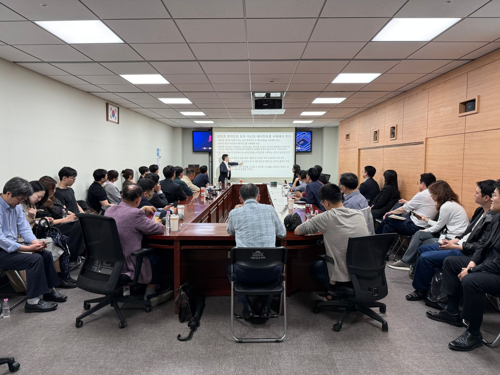
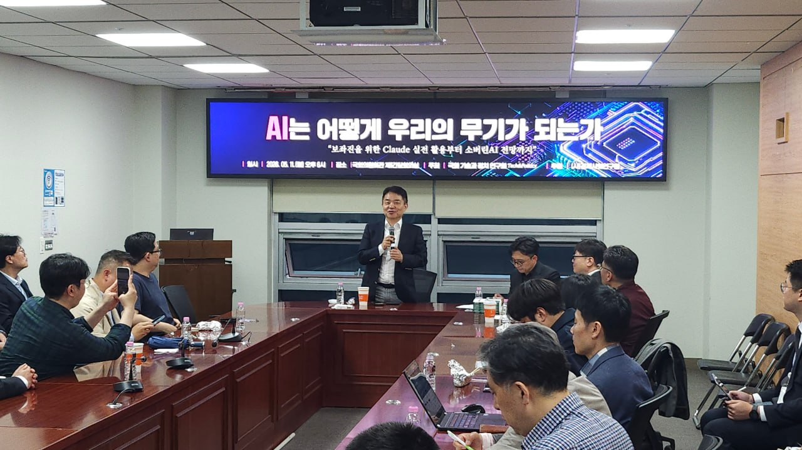

두 번째 국회 세미나


첫 번째 국회 세미나


한화오션 현장 특강


About
Tech & Politics
에너지, AI, 조선, 방산, 핵심광물, 우주 — 기술이 정치를 만나는 곳에서 일하고 연구합니다.
전략기술이 국제정치·안보·외교와 교차하는 지점을 분석하고, 정부·산업·전문가와의 교류를 통해 우리의 역할을 탐색합니다.
Recent
두 번째 국회 세미나


첫 번째 국회 세미나
한화오션 현장 특강
세 번째 국회 세미나
"미국 핵심광물 공급망 내 전략적 지위 확보 및 경쟁력 강화 효과가 기대된다" — 고려아연 이사회 (2025.12.15.)
자원이 무기가 되는 시대, 핵심광물 공급망이 빠르게 재편되고 있다. 자원빈국 대한민국이 어떻게 미국 테네시에 통합제련소를 수출했는지, 그 전략적 의미와 국회가 해야 할 역할을 고려아연 백순흠 사장과 함께 짚는다.
| 주제 | 자원빈국 대한민국은 어떻게 제련소를 수출했나 |
| 강연자 | 백순흠 고려아연 사장 |
| 일시 | 2026년 6월 19일(금) 오후 6시 |
| 장소 | 국회의원회관 제1간담회의실 |
| 주최 | 국회 기술과 정치 연구회 Tech & Politics |
신청
신청 내용은 tech_n_politics@naver.com으로 전달됩니다.
✓
신청이 완료되었습니다.
6월 19일(금) 국회의원회관에서 뵙겠습니다.